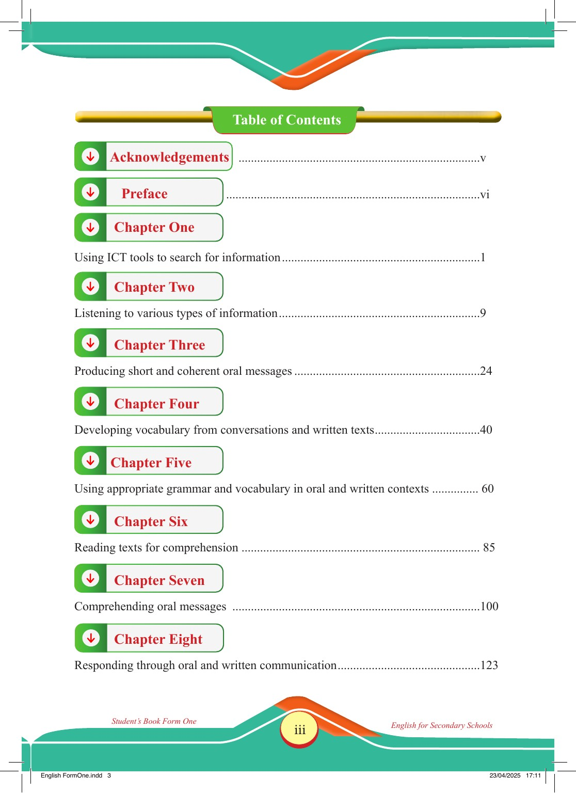

Accessible text transcript - page iii
Use the reader's read-aloud controls or select an individual segment below.
Front matter page three, shown as Roman numeral iii. Table of Contents Table of Contents Acknowledgements Acknowledgements v Preface Preface vi Chapter One Chapter One Using ICT tools to search for information 1 Chapter Two Chapter Two Listening to various types of information 9 Chapter Three Chapter Three Producing short and coherent oral messages 24 Chapter Four Chapter Four Developing vocabulary from conversations and written texts 40 Chapter Five Chapter Five Using appropriate grammar and vocabulary in oral and written contexts 60 Chapter Six Chapter Six Reading texts for comprehension 85 Chapter Seven Chapter Seven Comprehending oral messages 100 Chapter Eight Chapter Eight Responding through oral and written communication 123 Student’s Book Form One English for Secondary Schools English FormOne.indd 3 23/04/2025 17:11 Return to the page image